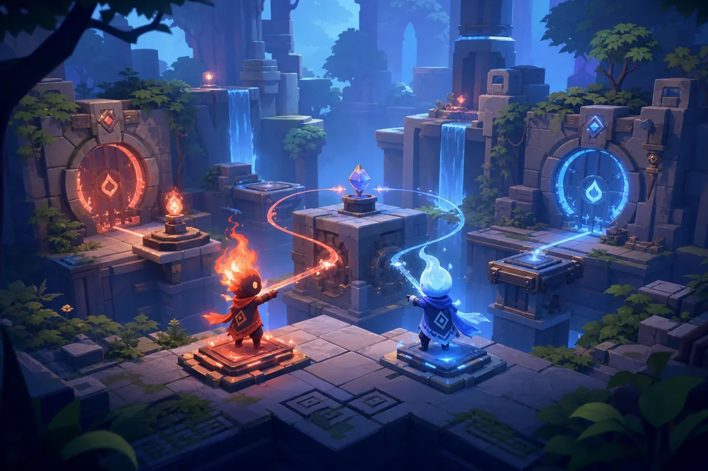

NETWORKED CO-OP
元素人
支持 2D / 3D 切换的双人联机解谜游戏
两名玩家分别控制火、水角色，利用元素能力协作解谜。游戏支持 2D 平台操作和 3D 空间机关，两种模式共用角色规则与关卡进度，通过 P2P 同步角色和机关状态。
ROLE / OWNERSHIP
独立开发 / 玩法系统 / 网络架构 / 2D-3D 体验设计
NETWORK / STACK
Godot · GDScript · WebRTC / P2P · 2D / 3D Gameplay · 状态同步
2D 与 3D 共用哪些状态？
切换模式时，移动方式和镜头会变化，角色能力、机关开关、收集物和关卡进度需要保留。两名玩家看到的关键状态也要一致。
共享规则，分别处理移动与镜头
元素能力、交互事件和关卡状态使用同一套数据，2D 与 3D 分别实现移动、镜头和场景。网络按不同频率同步角色状态与机关事件，关键事件通过可靠消息确认。
03 / SHARED STATE
主要功能
- 01
2D 与 3D 玩法 / 镜头模式切换
- 02
火、水元素能力与相克规则统一
- 03
双角色移动、动画与交互状态同步
- 04
共享机关、收集物、胜负与关卡进度一致
- 05
房间创建、加入、延迟与断线恢复
- 06
3D 角色、相机与机关实现，另有技术专题介绍